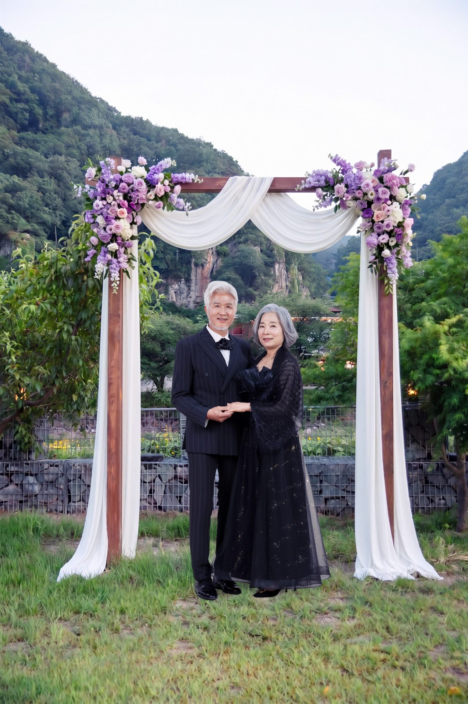
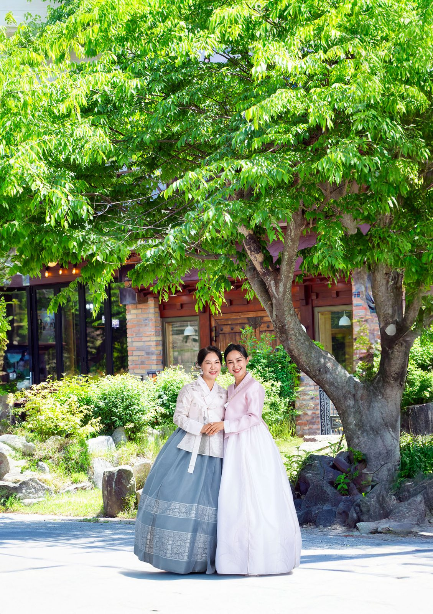

창원 가족사진 잘 찍는 곳, 사랑이야기 스튜디오 창원점입니다
2026-10-17 발행
안녕하세요. 창원에서 가족사진을 찍고 있는 사진작가 김작가입니다.

사진관에 처음 들어오시는 가족은 대부분 어색해하십니다. 어디를 봐야 할지, 손은 어떻게 해야 할지 모르시니까요. 그런데 십여 분만 지나면 가족끼리 웃고 이야기하시느라 그런 걸 다 잊으십니다. 저는 그 순간을 기다립니다. 억지로 웃게 해서 찍은 사진보다, 서로 쳐다보며 웃는 사진이 훨씬 오래 남더군요.
창원에서 가족사진을 찍어 오면서 가장 중요하게 여긴 것은 하나입니다. 가족이 편안해야 좋은 사진이 나온다는 것. 그래서 촬영장을 화려하게만 꾸미기보다는 어르신과 아이가 지치지 않게 하는 데 더 신경을 씁니다. 창으로 들어오는 자연광을 그대로 살리고, 표정을 만들게 하기보다 가족끼리 이야기하시는 순간을 기다려 찍습니다.
저희가 찍는 사진은 가족사진만 있는 게 아닙니다. 부모님과 자녀, 손주까지 한자리에 모이는 대가족사진이 있고, 오래된 친구들과 남기는 우정사진이 있습니다. 결혼기념일, 회갑, 칠순, 환갑, 첫돌 같은 기념일 사진도 많이 찍습니다. 요즘은 부모님께 다시 웨딩사진을 선물해 드리는 리마인드웨딩사진을 찾으시는 분들도 많습니다. 장수사진도 같은 마음으로, 미리 준비하시는 부모님의 건강과 장수를 기원하며 찍습니다.

한복을 입고 정원에서 찍는 야외 가족사진도 있습니다. 의령점에는 천여 평의 야외촬영장과 가족펜션이 있어서, 사진 찍으러 오신 김에 가족끼리 하루를 보내고 가시는 분들도 많습니다.

가족사진을 남기실 때 도움이 될 만한 이야기도 몇 가지 드릴게요. 옷은 같은 색 계열로 맞추시면 사진이 훨씬 차분해집니다. 흰색, 베이지, 네이비처럼 톤을 하나 정하시고, 무늬보다는 단색을 고르세요. 오시는 시간은 넉넉하게 잡으시는 편이 좋습니다. 소품 하나를 챙기시면 사진에 이야기가 생깁니다. 할머니의 부채, 아이가 좋아하는 인형이면 충분합니다. 아이가 낯을 가려 울어도 괜찮습니다. 서두르지 않고 기다렸다가 찍으면 됩니다.
창원점은 상남동 롯데빌딩 2층에 있습니다. 미리 예약하시면 기다리지 않고 편하게 촬영하실 수 있습니다. 전화로 편하게 상담하시고, 궁금한 것은 무엇이든 물어보세요. 오래 사진으로 가족을 만나온 사람이 정성껏 찍어 드리겠습니다.
가족사진은 잘 나오려고 찍는 것이 아니라, 그날 가족이 함께했다는 사실을 남기는 일이라고 생각합니다. 창원에서 가족사진을 생각하고 계시다면 언제든 편하게 연락 주세요.

자주 묻는 질문
Q. 창원에서 칠순 가족사진은 언제 예약하는 게 좋을까요?
A. 생신 날짜가 정해지면 한두 달 전에 미리 말씀해 주시는 것이 좋습니다. 부모님이 편한 시간대와 옷 준비까지 함께 맞출 수 있습니다.
Q. 부모님이 사진 찍는 것을 어색해하시는데 괜찮을까요?
A. 괜찮습니다. 촬영 전 김스카페에서 따뜻한 아메리카노 한 잔으로 긴장을 푸시고, 준비가 되면 천천히 시작합니다.
Q. 멀리서 가는데 하루에 다 할 수 있을까요?
A. 의령점은 1,000평 부지에 독채 펜션을 함께 운영하고 있어, 오시는 길이 먼 가족은 하루를 여유 있게 쓰실 수 있습니다.

오시는 곳
사랑이야기창원점
- 주소 경남 창원시 성산구 원이대로 652, 상남동 롯데빌딩 2층
- 전화 055-287-8022
- 영업시간 오전 10:00 ~ 오후 7:00
- 예약 전화 상담 · 카카오톡 채널
- 주차 건물 지하 주차장
김작가사진이야기 의령
- 주소 경남 의령군 궁류면 청정로 1188
- 전화 055-574-3706
- 영업시간 오전 10:00 ~ 오후 7:00
- 예약 전화 상담 · 카카오톡 채널
- 주차 전용 주차장
이 글에 한마디
댓글창을 준비하고 있습니다. 그동안 궁금한 점은 카카오채널로 남겨 주시면 바로 답변드립니다.
카카오채널로 한마디 남기기